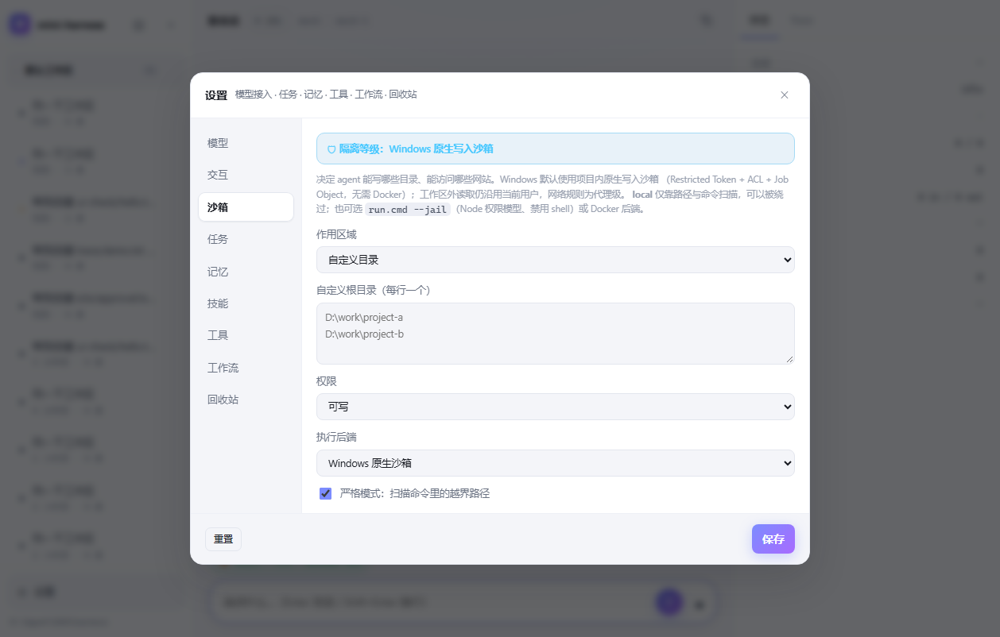
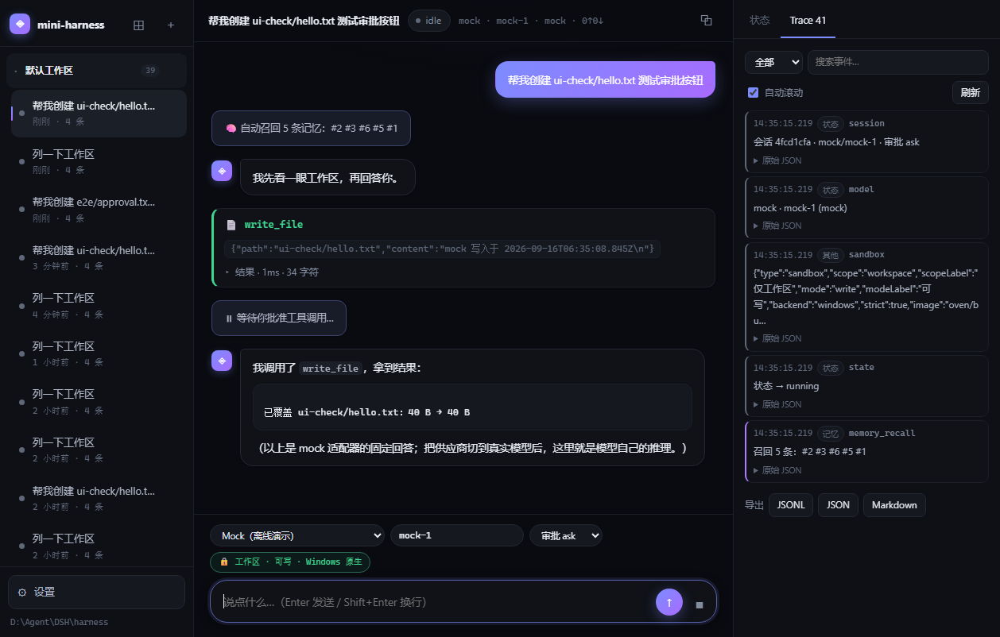
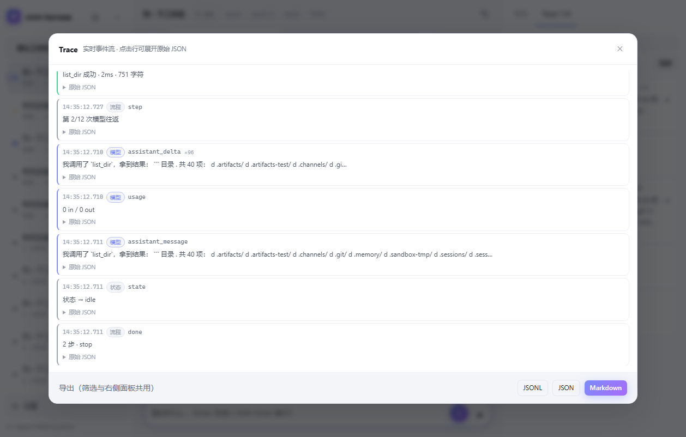
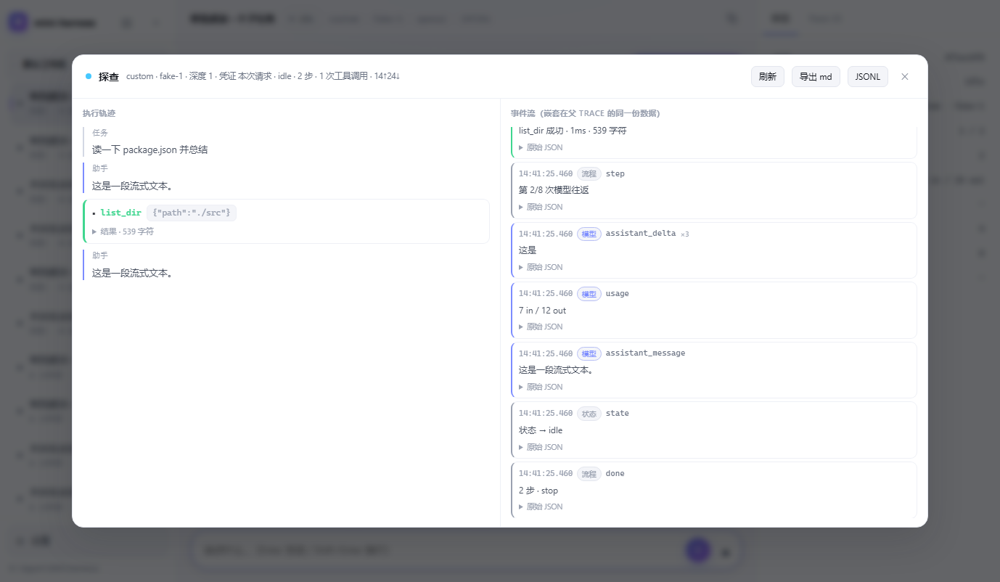
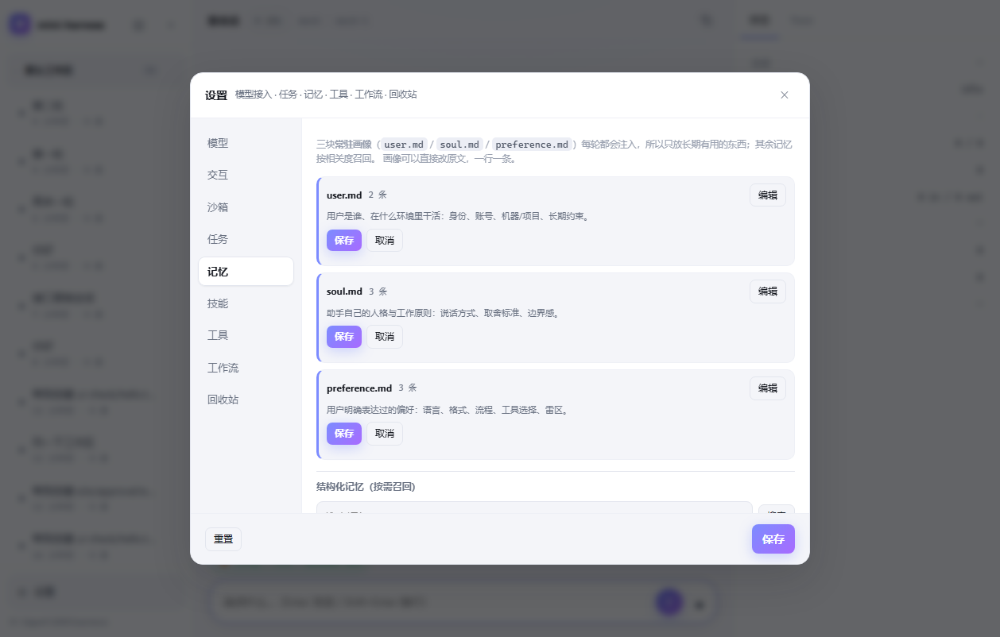

一个完整可用的 agent harness
模型接入 · 控制循环 · 工具生态 · 长期记忆 · 子代理 · 工作流 · 真沙箱 · 可观测性
不是 demo —— 每一层都真的能跑。
状态机、长期记忆、工具生态、子代理、工作流、沙箱、可观测性都是真能跑的；有 20+ 个真跑测试脚本兜底。
只用 Node 内建模块：自己写的 Markdown 解析器、零依赖 zip 读写、无框架前端，node server.js 直接跑。
启动脚本自动挑运行时（自带 Bun → 系统 Node → 系统 Bun → 自动下载），不用 npm install，不用 Docker。
默认 mock 模型就能看到完整链路；填一个 API key（15 家厂商预设）或指向本地 Ollama / vLLM 即可接真实模型。
runtime/bin/bun（打包分发时带上）node（已装就用它，零下载）bunruntime/（约 30 MB，之后不再下载）public/server.jssrc/src/providers/awaiting_approval轮次步数、token 与成本聚合挂在状态上；会话存在磁盘上，重启不丢，可以恢复、可以回放。
读文件、搜索这类安全操作直接放行。
写文件、执行命令弹审批按钮；超时等于拒绝。
危险命令硬拦：rm -rf /、mkfs、改注册表等。
read / write / edit / list / glob / grep…
run_shell：作业目录、超时、进程树收拢，必须过沙箱
memory add / edit / delete / search / stats
agent_run / agent_save / agent_list / agent_delete
技能包安装 / 生成 / 导出 / 按需加载
todo_write 让模型维护可勾选的任务清单
把多阶段任务交给 workflow 引擎跑
产物落盘 + 会话内可下载
工具可以随时启停：关掉就立刻从模型的工具表里消失（省 token，也意味着更小的攻击面）。每个工具都拿到统一的 ctx（会话 / 工作区 / 沙箱 / 事件发射器），错误一律归一化成结构化结果，而不是抛异常。
你是谁、在做什么、技术偏好。
协作方式与「应该怎么做事」的立场。
可执行偏好：回复语言、要不要展示图片……
global：所有会话可见的长期事实workspace：只在这个工作区生效session：本会话的临时上下文bwrap：整机只读 + 授权根可写，独立 PID/IPC/UTS namespace
sandbox-exec（Seatbelt）：deny default，读全域写白名单
受限令牌 + capability SID ACL + Job Object
内核断网（bwrap --unshare-net / Seatbelt / Docker network none）— 绕不过；
强制代理桥（bwrap 白/黑名单：沙箱里只有一个 unix socket 出口）— 绕不过；
合作式代理（windows / wsl / local）— 会被直连绕过，界面里如实标注。
组件缺失或内核不支持时 失败关闭：直接拒绝执行，绝不静默回落到策略层。

{{input}} / {{prev}} / {{steps.x}}典型用法：研究型任务先并行侦察、再汇总成报告；重构任务先并行扫描多个模块、再统一改。
模型增量、工具调用与结果、审批、记忆召回、子代理、工作流、用量与错误……同时喂 SSE 和终端日志。
事件摘要 + 分组 + JSONL / JSON 快照 / Markdown，界面上可以全屏看，也可以下载成附件。
会话 JSON + 事件 JSONL + 产物文件；支持回收站、备份导出、中止后恢复。
每次请求的 token、耗时、重试次数都记录在会话状态里，可以按会话聚合。
越权、危险命令、网络拒绝都会变成界面提示与 trace 事件，而不是静默失败。




沙箱后端不可用就拒绝执行，绝不静默回落到可绕过的策略层；界面、日志、快照里都写清楚现在到底是什么边界。
内核断网 / 强制代理 / 合作式代理分级如实标注；bwrap 没有 cgroup 配额，就把「内存/CPU 上限不生效」标出来。
内核沙箱管「碰得到什么」，策略与审批管「要不要做」；两层各自独立，互不背锅。
放行、拒绝、重试、审批、召回都进 trace；会话可恢复、事件可回放，出问题能复盘。
控制循环 + 工具生态 + 长期记忆 + 子代理 + 工作流 + 三平台原生沙箱 + 三种 trace 导出 + 自带前端。